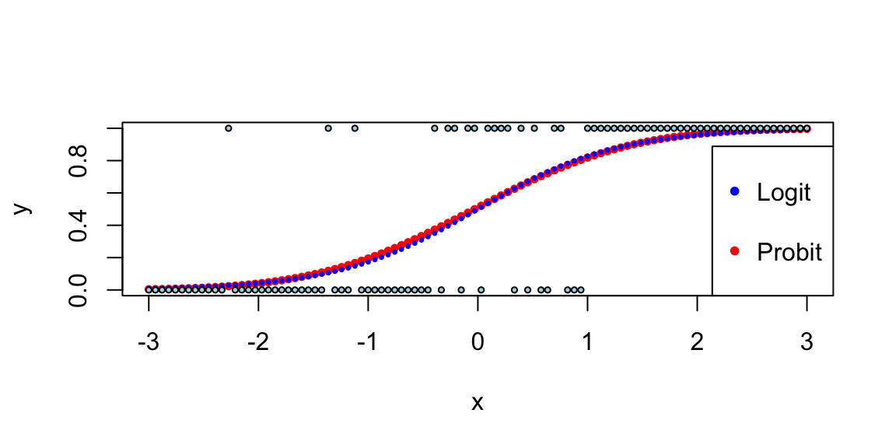
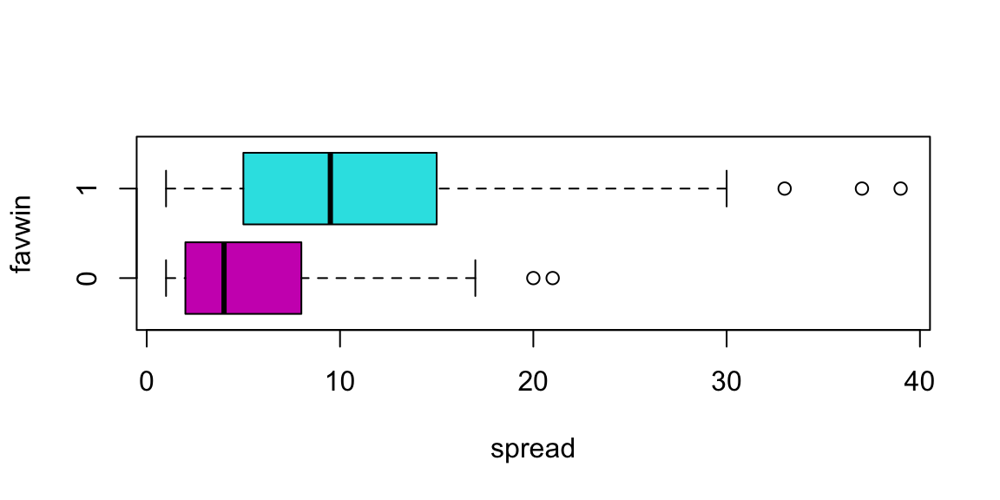
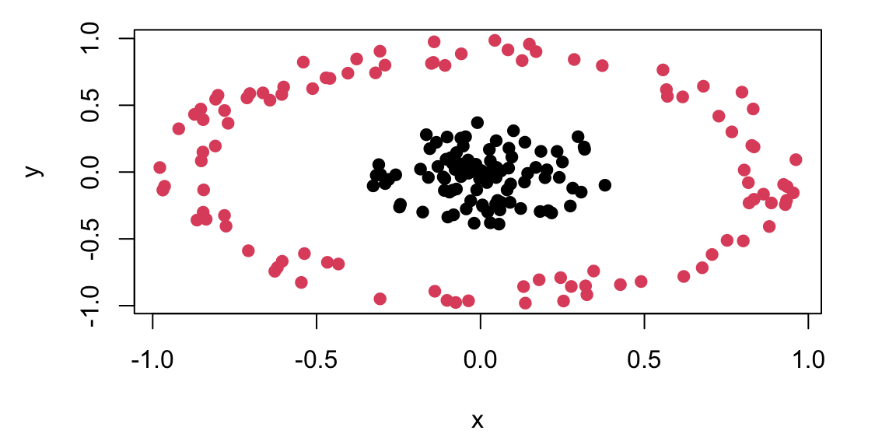

graph LR x[Linear Predictor z] --> s[Sigmoid Function] s --> p[Probability P]
13 Logistic Regression and Generalized Linear Models
Classification predicts categories rather than numbers. Does this patient have the disease or not? Is this email spam? Is that object in the camera feed a pedestrian, a vehicle, or a traffic sign? The output is discrete—often just 0 or 1 (binary classification), sometimes multiple classes. Self-driving cars classify objects in real-time from camera feeds; medical systems flag high-risk patients; fraud detection systems sort transactions into suspicious and legitimate.
Given observed data \((x_i,y_i)_{i=1}^n\), where each \(y_i\) is either 0 or 1, we start by assuming a binomial likelihood function for the response variable, defined as follows: \[ P(y_i = 1\mid p_i) = p_i^{y_i} (1-p_i)^{1-y_i}, \] where \(p_i\) is the function of the inputs \(x_i\) and coefficients \(\beta\) that gives us the probability of the response variable taking on a value of 1, given the input variables. A typical approach to calculate \(p_i\) is to use the logistic function \[\begin{align*} f_{\beta}(x_i) = & \beta^Tx_i\\ p_i = & \sigma(f_{\beta}(x_i)) = \frac{e^{f_{\beta}(x_i)}}{1+e^{f_{\beta}(x_i)}}, \end{align*}\]
where \(\beta\) is a vector of parameters. The logistic function \(\sigma(\cdot)\) maps any real number to the interval \((0, 1)\), interpreting the output as a probability.
13.1 Model Fitting
Then we fit the model using binomial log-likelihood minimization. It leads us to the maximum likelihood estimator for parameters \(\beta\) (a.k.a cross-entropy estimator), defined as \[ \hat \beta = \arg\min_{\beta}\mathcal{L}(\beta), \] where \[ \mathcal{L}(\beta) = -\sum_{i=1}^n \left[ y_i \log p_i + (1-y_i) \log \left ( 1-p_i \right ) \right]. \] Similar to the least squares estimator, the cross-entropy estimator optimization problem is convex, so it has a unique solution.
In the unconditional case (an intercept-only model with no inputs \(x\)), the cross-entropy estimator simplifies to the sample mean. If we take the derivative of the above expression with respect to \(\beta_0\) and set it to zero, we get \[ - \frac{d}{d\beta_0}\sum_{i=1}^n \left[ y_i \log \left ( \beta_0 \right ) + (1-y_i) \log \left ( 1-\beta_0 \right ) \right] = -\sum_{i=1}^n \left[ \frac{y_i}{\beta_0} - \frac{1-y_i}{1-\beta_0} \right] = 0 \] which gives us the solution \[ \hat{\beta}_0 = \frac{1}{n}\sum_{i=1}^n y_i. \] which is the sample mean.
Unlike the least squares estimator or the unconditional case, the system of equations \[ \nabla \mathcal{L}(\beta) = 0 \] is not linear and cannot be solved by inverting a matrix. However, there are efficient iterative numerical optimization algorithms that can be used to find the optimal solution. The most common one is the BFGS (Broyden-Fletcher-Goldfarb-Shanno) algorithm. It is a quasi-Newton method that’s particularly well-suited for optimizing the cross-entropy loss function in logistic regression.
When we have more than two classes \(y \in \{1,\ldots,K\}\), we build \(K-1\) models \(f_{\beta_1}(x),\ldots, f_{\beta_{K-1}}(x)\), one for each of the first \(K-1\) classes, while treating the \(K\)-th class as the reference class with \(f_{\beta_K}(x) = 0\). We then use the softmax function to convert the outputs into probabilities:
For classes \(j = 1, \ldots, K-1\): \[ P(y = j \mid x) = \frac{\exp(f_{\beta_j}(x))}{1 + \sum_{i=1}^{K-1} \exp(f_{\beta_i}(x))} \]
For the reference class \(K\): \[ P(y = K \mid x) = \frac{1}{1 + \sum_{i=1}^{K-1} \exp(f_{\beta_i}(x))} \]
Some implementations of the logistic regression use \(K\) models, one for each class, and then use the softmax function to convert the outputs into probabilities. This is equivalent to the above approach, but it is more computationally expensive.
The vector of non-scaled outputs \((f_{\beta_1}(x),\ldots, f_{\beta_{K-1}}(x))\) is called the logits.
The softmax function is a generalization of the logistic function to the case of more than two classes. It is often used as the activation function in the output layer of neural networks for multi-class classification problems. It converts the output of each model into a probability distribution over the classes, making it suitable for multi-class classification with probabilistic outputs.
The logistic function has a nice statistical interpretation. It is the CDF of the logistic distribution, which is a symmetric distribution with mean 0 and variance \(\pi^2/3\), thus \(p_i\) is simply a value of this CDF, evaluated at \(\beta^Tx_i\).
Further, Logistic regression models the log-odds (logit) of the probability as a linear function of the predictors, which aligns with the maximum likelihood estimation framework and provides desirable statistical properties. Specifically, if we invert the logistic function, \[ p_i = \sigma(\beta^Tx_i) = \frac{e^{\beta^Tx_i}}{1+e^{\beta^Tx_i}}, \] we get the log-odds \[ \log\left(\frac{p_i}{1-p_i}\right) = \beta^Tx_i. \] Meaning that \(\beta^Tx_i\) measures how probability of \(y_i = 1\) changes with respect to the change in \(x_i\) on the log-odds scale. It allows us to interpret the model coefficients as the log-odds ratios of the response variable.
In some disciplines, such as econometrics, psychology and natural sciences, a normal CDF is used instead of the logistic CDF. This is often done for historical reasons or because the normal CDF implies slightly different theoretical assumptions that may be more appropriate for specific datasets.
In the case of the normal CDF, the model is called probit, it stands for probability unit, and the link function is called probit link. The probit model is defined as \[ \Phi^{-1}(p_i) = \beta^Tx_i. \] where \(\Phi(\cdot)\) is the normal CDF.
The term probit was coined in the 1930’s by biologists studying the dosage-cure rate link. We can fit a probit model using glm function in R.
## -0.86
## 0.19
## 1
## 0.19
Our prediction is the blue area which is equal to 0.195.
Outside fields like behavioral economics, the logistic function is generally preferred over the probit model due to the interpretability of log-odds and its natural extension to multi-class problems. The PDF of the logistic distribution is very similar to the normal PDF.

Example 13.1 (Example: NBA point spread) We will use the NBA point spread data to illustrate the logistic regression. The data is available in the NBAspread.csv file. The data contains the point spread for each game in the NBA from 2013 to 2014 season. The data also contains the outcome of the game, whether the favorite won or not. The point spread is the number of points by which the favorite is expected to win the game and is predicted by the bookmakers. We simply want to see how well the point spread predicts the outcome of the game.
We start by loading the data and visualizing it.
| favwin | favscr | undscr | spread | favhome | fregion | uregion |
|---|---|---|---|---|---|---|
| 1 | 72 | 61 | 7.0 | 0 | 3 | 4 |
| 1 | 82 | 74 | 7.0 | 1 | 3 | 1 |
| 1 | 87 | 57 | 17.0 | 1 | 3 | 3 |
| 0 | 69 | 70 | 9.0 | 1 | 3 | 3 |
| 0 | 77 | 79 | 2.5 | 0 | 2 | 3 |
| 1 | 91 | 65 | 9.0 | 0 | 3 | 4 |


Does the Vegas point spread predict whether the favorite wins or not? The histogram shows the distribution of point spreads for games where the favorite won (turquoise) versus games where the favorite lost (purple). The boxplot provides another view of this relationship. Let’s fit a logistic regression model to quantify this relationship:
| term | estimate | std.error | statistic | p.value |
|---|---|---|---|---|
| spread | 0.16 | 0.01 | 11 | 0 |

The \(\beta\) measures how our log-odds change. For this model, we have \(\beta = 0.156\), meaning that for every one point increase in the point spread, the log-odds of the favorite winning increases by 0.156.
Now, we can use the model to predict the probability of the favorite winning for a new game with a point spread of 8 or 4.
predict(nbareg, newdata = data.frame(spread = c(8, 4)), type = "response")
## 1 2
## 0.78 0.65The code above simply “Plugs-in” the values for the new game into our logistic regression \[ { P \left ( \mathrm{ favwin} \mid \mathrm{ spread} \right ) = \frac{ e^{ \beta x } }{ 1 + e^{\beta x} } } \] We can calculate it manually as well.
exp(0.156 * 8) / (1 + exp(0.156 * 8))
## 0.78
exp(0.156 * 4) / (1 + exp(0.156 * 4))
## 0.65Check that when \(\beta =0\) we have \(p= \frac{1}{2}\).
Given our new values spread\(=8\) or spread\(=4\), the win probabilities are \(78\)% and \(65\)%, respectively. Clearly, the bigger spread means a higher chance of winning.
Notice that the predict function returns a numeric value between 0 and 1. However, if we want to make a decision (to bet or not to bet), we need to have a binary outcome. A simple method to move between the predicted probability and binary value is to use thresholding. \[ \hat y_i = \begin{cases} 1 & \text{if } \hat p_i > \alpha \\ 0 & \text{if } \hat p_i \leq \alpha \end{cases} \] where \(\alpha\) is a threshold value. A typical choice is \(\alpha = 0.5\).
Now let’s calculate the number of correct predictions using threshold \(\alpha = 0.5\). R has a convenient table function that can summarize the counts of the predicted and actual values in a table.
table(NBA$favwin, as.integer(predict(nbareg, type = "response") > 0.5), dnn = c("Actual", "Predicted"))
## Predicted
## Actual 1
## 0 131
## 1 422Our model gets 0.7631103 of the predictions correctly. This number is called accuracy of the model.
13.2 Confusion Matrix
We will analyse the tennis data set to show what is the decision boundary for the logistic regression model. The decision boundary is the line that separates the two classes. It is defined as the line where the probability of the favorite winning is 0.5. Then we will use the confusion matrix to evaluate the performance of the model.
Example 13.2 (Logistic Regression for Tennis Classification) Data science plays a major role in tennis, you can learn about recent AI tools developed by IBM from this Yahoo! Finance Article.
We will analyze the Tennis Major Tournament Match Statistics Data Set from the UCI ML repository. The data set has one per each game from four major Tennis tournaments in 2013 (Australia Open, French Open, US Open, and Wimbledon).
Let’s look at a few columns of the randomly selected five rows of the data
| Player1 | Player2 | Round | Result | gender | surf | |
|---|---|---|---|---|---|---|
| 532 | Florian Mayer | Juan Monaco | 1 | 1 | M | Hard |
| 816 | L.Kubot | J.Janowicz | 5 | 0 | M | Grass |
| 431 | Svetlana Kuznetsova | Ekaterina Makarova | 1 | 1 | W | Clay |
| 568 | Marcos Baghdatis | Go Soeda | 1 | 1 | M | Hard |
| 216 | Mandy Minella | Anastasia Pavlyuchenkova | 2 | 0 | W | Hard |
We have data for 943 matches and for each match we have 44 columns, including names of the players, their gender, surface type and match statistics. Let’s look at the number of break points won by each player. We will plot BPW (break points won) by each player on the scatter plot and will colorize each dot according to the outcome

We can clearly see that the number of break points won is a clear predictor of the match outcome. This is obvious and follows from the rules; to win a match, a player must win break points. Now, we want to understand the impact of winning a break point on the overall match outcome. We do it by building a logistic regression model
which(is.na(d$BPW.1)) # there is one row with NA value for the BPW.1 value and we remove it
## 171
d <- d[-171, ]
n <- dim(d)[1]
m <- glm(Result ~ BPW.1 + BPW.2 - 1, data = d, family = "binomial")
m %>%
tidy() %>%
kable()| term | estimate | std.error | statistic | p.value |
|---|---|---|---|---|
| BPW.1 | 0.40 | 0.03 | 15 | 0 |
| BPW.2 | -0.42 | 0.03 | -15 | 0 |
The predicted values are stored in the fitted.values field of the model object. Those are the probabilities of player 1 winning the match. We need to convert them to binary predictions using \(0.5\) as a threshold for our classification.
table(d$Result, as.integer(m$fitted.values > 0.5), dnn = c("Actual", "Predicted"))
## Predicted
## Actual 0 1
## 0 416 61
## 1 65 400This table shows the number of correct and incorrect predictions for each class. The rows are the actual outcomes and the columns are the predicted outcomes. The first row shows the number of matches where player 1 won and the model predicted that player 1 won. The second row shows the number of matches where player 1 lost and the model predicted that player 1 lost. Thus, our model got (400+416)/942 = 86.6242038% of the predictions correctly! The accuracy is the ratio of the number of correct predictions to the total number of predictions.
This table is called confusion matrix. It is a table that shows the number of correct and incorrect predictions for each class. The rows are the actual outcomes and the columns are the predicted outcomes. Formally, it is defined as
| Predicted: YES | Predicted: NO | |
|---|---|---|
| Actual: YES | TPR | FNR |
| Actual: NO | FPR | TNR |
Fundamentally, logistic regression attempts to construct a linear boundary that separates the two classes. In our case, we have two predictors \(x_1\) = BPW.1 and \(x_2\) = BPW.2 and our model is \[ \log\left(\dfrac{p}{1-p}\right) = \beta_1x_1 + \beta_2 x_2, \] where \(p\) is the probability of player 1 winning the match. We want to find the line along which the probability is 1/2, meaning that \(p/(1-p) = 1\) and log-odds \(\log(p/(1-p)) = 0\), thus the equation for the line is \(\beta_1x_1 + \beta_2 x_2 = 0\) or \[ x_2 = \dfrac{-\beta_1}{\beta_2}x_1 \]
Let’s see the line found by the glm function
plot(d$BPW.1 + rnorm(n), d$BPW.2 + rnorm(n),
pch = 21, col = d$Result + 2, cex = 0.6, bg = "yellow", lwd = 0.8,
xlab = "BPW by Player 1", ylab = "BPW by Player 2"
)
x <- seq(0, 30, length.out = 200)
y <- -m$coefficients[1] * x / m$coefficients[2]
lines(x, y, lwd = 2, col = "red")
There are a couple of observations. First, the effect of a break point on the game outcome is significant and symmetric; the effect of losing a break point is the same as the effect of winning one. We also can interpret the effect of winning a break point in the following way. We will keep BPW.2 = 0 and will calculate what happens to the probability of winning when BPW.1 changes from 0 to 1. The odds ratio for player 1 winning when BPW.1 = 0 is exp(0) which is 1, meaning that the probability that P1 wins is 1/2. Now when BPW.1 = 1, the odds ratio is
exp(0.4019)
## 1.5We can calculate probability of winning from the regression equation \[
\dfrac{p}{1-p} = 1.5,~~~p = 1.5(1-p),~~~2.5p = 1.5,~~~p = 0.6
\] Thus probability of winning goes from 50% to 60%, we can use predict function to get this result
predict.glm(m, newdata = data.frame(BPW.1 = c(0), BPW.2 = c(0)), type = "response")
## 1
## 0.5
predict.glm(m, newdata = data.frame(BPW.1 = c(1), BPW.2 = c(0)), type = "response")
## 1
## 0.6What happens to the chances of winning when P1 wins three more break points compared to the opponent
predict.glm(m, newdata = data.frame(BPW.1 = c(0), BPW.2 = c(0)), type = "response")
## 1
## 0.5
predict.glm(m, newdata = data.frame(BPW.1 = c(3), BPW.2 = c(0)), type = "response")
## 1
## 0.77Chances go up by 27%.
Tennis is arguably the sport in which men and women are treated equally. Both men’s and women’s matches are shown during prime-time on TV, and they both have the same prize money. However, one of the comments you hear often is that women’s matches are “less predictable”, meaning that an upset (when the favorite loses) is more likely to happen in a women’s match compared to men’s matches. We can test this statement by looking at the residuals. The larger the residual the less accurate our prediction was.
outlind <- which(d$res < 2)
boxplot(d$res[outlind] ~ d$gender[outlind], col = c(2, 3), xlab = "Gender", ylab = "Residual")
Let’s do a formal t-test on the residuals for men’s and women’s matches
men <- d %>%
filter(res < 2, gender == "M") %>%
pull(res)
women <- d %>%
filter(res < 2, gender == "W") %>%
pull(res)
t.test(men, women, alternative = "two.sided")
##
## Welch Two Sample t-test
##
## data: men and women
## t = -5, df = 811, p-value = 0.000003
## alternative hypothesis: true difference in means is not equal to 0
## 95 percent confidence interval:
## -0.105 -0.043
## sample estimates:
## mean of x mean of y
## 1.2 1.3The difference of \(0.07\) between men and women and the statistic value of \(-4.7\) means that the crowd wisdom that women’s matches are less predictable is correct. The difference is statistically significant!
13.3 ROC Curve and Confounding Variables
Using default data set, we will illustrate the concept of ROC curve and confounding variables.
Example 13.3 (Horse Race Betting) Horse race betting provides a rich application of logistic regression, where predicting whether the favorite wins illustrates key classification concepts. This example uses data from the Hong Kong Jockey Club, one of the world’s largest horse racing operations (see the Benter case study for comprehensive analysis).
The betting public’s implied probabilities, derived from pari-mutuel odds, exhibit the well-documented favorite-longshot bias: favorites tend to win more often than the odds suggest, while longshots win less often. We can build a logistic regression model to predict whether the favorite wins based on race characteristics.
First, we load and prepare the data. We identify the favorite in each race as the horse with the highest implied probability from the betting odds.
## Dataset: 5885 races from 1997-11-30 to 2005-08-28
## Favorite win rate: 29.9%Our outcome variable is whether the favorite won (win = 1) or not (win = 0). The favorite’s implied probability from public odds should be a strong predictor; if the market is perfectly calibrated, this probability would equal the true win rate.
| term | estimate | std.error | statistic | p.value |
|---|---|---|---|---|
| (Intercept) | -2.4 | 0.11 | -22 | 0 |
| public_prob | 6.1 | 0.41 | 15 | 0 |
The positive coefficient on public_prob confirms that higher implied probability predicts higher actual win probability. We can visualize this relationship:

The model prediction lies above the 45-degree line, confirming the favorite-longshot bias: favorites win more often than their odds imply.
Now we build the confusion matrix. In betting, the threshold choice has financial implications: being too aggressive (low threshold) means betting on too many “favorites” that lose, while being too conservative means missing profitable opportunities.
| 0 | 1 | |
|---|---|---|
| 0 | 0.66 | 0.34 |
| 1 | 0.50 | 0.50 |
We use a threshold of 0.3 because the baseline win rate for favorites is around 30%. The ROC curve helps us understand the trade-off between correctly identifying winners (sensitivity) and avoiding false predictions on losers (specificity).

The ROC curve shows reasonable predictive power above the diagonal. The choice of threshold depends on the betting strategy: a lower threshold captures more true winners but also more false positives.
Now let’s examine multiple predictors. Hong Kong has two racetracks: Happy Valley (a tight urban track) and Sha Tin (a modern facility with longer straights). We might expect venue to affect favorite performance.
| term | estimate | std.error | statistic | p.value |
|---|---|---|---|---|
| (Intercept) | -2.95 | 0.32 | -9.37 | 0.00 |
| public_prob | 6.32 | 0.43 | 14.55 | 0.00 |
| field_size | 0.04 | 0.02 | 1.83 | 0.07 |
| venue_ST | -0.07 | 0.07 | -0.96 | 0.34 |
The coefficient for field_size is negative, which seems intuitive; in larger fields, there’s more competition, so favorites may have harder time winning. But the coefficient for venue_ST (Sha Tin) is also negative. Does this mean favorites perform worse at Sha Tin?
Let’s check for confounding by examining field sizes at each venue:

Sha Tin races have systematically larger fields. This creates confounding: the apparent venue effect may actually be a field size effect. When we control for field size in the model, the venue effect represents the residual impact of venue beyond what’s explained by field size.
To see this more clearly, let’s compare predictions across venues for races with the same field size:

After controlling for field size, the venue difference is smaller. The remaining gap may reflect track characteristics: Happy Valley’s tighter turns could favor front-running favorites who avoid traffic problems.
To summarize: ROC curves help visualize the trade-off between catching winners and avoiding false positives across different probability thresholds. In betting applications, this trade-off has direct financial consequences, making threshold selection a critical business decision. Confounding is also evident: Sha Tin races appear to disadvantage favorites, but this partly reflects larger field sizes rather than track characteristics. Including confounders in the model isolates the true venue effect. These principles from horse racing apply broadly to any classification problem where features are correlated.
Now, a natural question is how to choose the cut-off value \(\alpha\)? In betting, we place a bet when \(p(\text{win}) > \alpha\). Here \(\alpha\) is our confidence threshold. If we choose \(\alpha = 0\) and bet on everything, we’ll lose money on bad bets. If we choose \(\alpha = 1\), we never bet and make no money. In order to choose an appropriate \(\alpha\), we need to know the payoffs.
For betting on favorites at typical odds (say, 2.5:1 decimal odds), the pay-off matrix looks like:
| Win | Lose | |
|---|---|---|
| Bet | 1.5 | -1 |
| Don’t bet | 0 | 0 |
If we bet $1 and win at 2.5:1 odds, we gain $1.50 profit. If we lose, we lose our $1 stake. If we don’t bet, we neither gain nor lose.
Given this pay-off matrix, we can calculate the expected profit across different thresholds using our horse racing data.

To identify the most effective strategy, we evaluate the expected profit across all possible thresholds \(\alpha\). The expected profit per dollar wagered is calculated as a weighted average of the gains from true positives and the losses from false positives: \[E[\text{Profit} \mid \alpha] = P(\text{win}) \cdot \text{Sensitivity}(\alpha) \cdot 1.5 - P(\text{lose}) \cdot (1 - \text{Specificity}(\alpha)) \cdot 1.0\] where \(P(\text{win})\) is the base rate of winners in the training data. This calculation allows us to identify the profitable threshold range (where expected profit is positive), the optimal threshold (which maximizes profit), and the resulting maximum expected profit.
## Profitable threshold range: 0.32 to 0.80
## Optimal threshold: 0.40
## Maximum expected profit: $0.028 per $1 wageredThis analysis shows that the choice of threshold has direct financial consequences. Unlike academic classification problems where we might default to \(\alpha = 0.5\), real-world applications require understanding the asymmetric costs of different types of errors.
Example 13.4 (LinkedIn Study) How to Become an Executive(Irwin 2016; Gan and Fritzler 2016)?
Logistic regression was used to analyze the career paths of about \(459,000\) LinkedIn members who worked at a top 10 consultancy between 1990 and 2010 and became a VP, CXO, or partner at a company with at least 200 employees. About \(64,000\) members reached this milestone, \(\hat{p} = 0.1394\), conditional on making it into the database. The goals of the analysis were the following
- Look at their profiles – educational background, gender, work experience, and career transitions.
- Build a predictive model of the probability of becoming an executive
- Provide a tool for analysis of “what if” scenarios. For example, if you are to get a master’s degree, how your jobs perspectives change because of that.
Let’s build a logistic regression model with \(8\) key features (a.k.a. covariates): \[ \log\left ( \frac{p}{1-p} \right ) = \beta_0 + \beta_1x_1 + \beta_2x_2 + ... + \beta_8x_8 \]
Here \(p\) is the probability of “success” – meaning the person reaches VP/CXO/Partner seniority at a company with at least 200 employees. The features to predict the “success” probability are \(x_i (i=1,2,\ldots,8)\)
- \(x_1\): Metro region: whether a member has worked in one of the top 10 largest cities in the U.S. or globally.
- \(x_2\): Gender: Inferred from member names: ‘male’, or ‘female’
- \(x_3\): Graduate education type: whether a member has an MBA from a top U.S. program / a non-top program / a top non-U.S. program / another advanced degree
- \(x_4\): Undergraduate education type: whether a member has attended a school from the U.S. News national university rankings / a top 10 liberal arts college /a top 10 non-U.S. school
- \(x_5\): Company count: # different companies in which a member has worked
- \(x_6\): Function count: # different job functions in which a member has worked
- \(x_7\): Industry sector count: # different industries in which a member has worked
- \(x_8\): Years of experience: # years of work experience, including years in consulting, for a member.
The following estimated \(\hat\beta\)s of features were obtained. With a sample size of 456,000 they are measured rather accurately. Recall that in logistic regression, the coefficients represent the change in log-odds for a unit change in the feature.
| Category | Feature | Coefficient (\(\hat{\beta}\)) |
|---|---|---|
| Location | Metro region | 0.28 |
| Personal | Gender (Male) | 0.31 |
| Education | Graduate education type | 1.16 |
| Education | Undergraduate education type | 0.22 |
| Work Experience | Company count | 0.14 |
| Work Experience | Function count | 0.26 |
| Work Experience | Industry sector count | -0.22 |
| Work Experience | Years of experience | 0.09 |
Here are three main findings
- Working across job functions, like marketing or finance, is good. Each additional job function provides a boost that, on average, is equal to three years of work experience. Switching industries has a slight negative impact. Learning curve? lost relationships?
- MBAs are worth the investment. But pedigree matters. Top five program equivalent to \(13\) years of work experience!!!
- Location matters. For example, NYC helps.
We can also personalize the prediction for predict future possible future executives. For example, Person A (p=6%): Male in Tulsa, Oklahoma, Undergraduate degree, 1 job function for 3 companies in 3 industries, 15-year experience.
Person B (p=15%): Male in London, Undergraduate degree from top international school, Non-MBA Master, 2 different job functions for 2 companies in 2 industries, 15-year experience.
Person C (p=63%): Female in New York City, Top undergraduate program, Top MBA program, 4 different job functions for 4 companies in 1 industry, 15-year experience.
Let’s re-design Person B.
Person B (p=15%): Male in London, Undergraduate degree from top international school, Non-MBA Master, 2 different job functions for 2 companies in 2 industries, 15-year experience.
- Work in one industry rather than two. Increase \(3\)%
- Undergrad from top \(10\) US program rather than top international school. \(3\)%
- Worked for \(4\) companies rather than \(2\). Another \(4\)%
- Move from London to NYC. \(4\)%
- Four job functions rather than two. \(8\)%. A \(1.5\)x effect.
- Worked for \(10\) more years. \(15\)%. A \(2\)X effect.
Choices and Impact (Person B) are shown below
Choices and Impact (Person B) are shown below in Figure 13.2. The chart illustrates the marginal impact of each individual strategic choice (e.g., getting an MBA, moving to NYC) on the probability of becoming an executive, compared to Person B’s baseline of 15%. When all these positive choices are combined, the probability skyrockets to 81%.

13.4 Imbalanced Data
Often, you have much more observations with a specific label, such a sample is called imbalanced. This is a common problem in real-world classification tasks where one class significantly outnumbers the other(s). For example, in fraud detection, legitimate transactions vastly outnumber fraudulent ones; in medical diagnosis, healthy patients often outnumber those with rare diseases; and in manufacturing, defective products are typically much rarer than non-defective ones.
When dealing with imbalanced data, you should avoid using accuracy as a metric to choose a model. Consider a binary classification problem with 95% of samples labeled as class 1. A naive classifier that simply assigns label 1 to every input will achieve 95% accuracy, making it appear deceptively good while being completely useless for practical purposes.
Instead, more appropriate evaluation metrics should be used. The Receiver Operating Characteristic (ROC) curve plots the true positive rate (sensitivity) against the false positive rate (1-specificity) at various classification thresholds. The Area Under the Curve (AUC) provides a single scalar value that measures the model’s ability to distinguish between classes, regardless of the chosen threshold. An AUC of 0.5 indicates random guessing, while 1.0 represents perfect classification.
The F1 score combines precision and recall into a single score, providing a balanced measure that penalizes models that are either too conservative or too aggressive: \[ F1 = 2\dfrac{\mathrm{precision} \times \mathrm{recall}}{\mathrm{precision} + \mathrm{recall}} \] where precision measures the proportion of true positives among predicted positives, and recall measures the proportion of true positives that were correctly identified.
The precision-recall curve is particularly useful for imbalanced datasets, as it plots precision against recall at various thresholds, focusing on the performance of the positive class. Cohen’s Kappa measures agreement between predicted and actual classifications while accounting for agreement by chance, making it more robust to class imbalance than accuracy.
To address imbalanced data, several strategies can be employed. Data-level approaches include oversampling, where you synthetically generate more samples of the minority class using techniques like bootstrap sampling with replacement, SMOTE (Synthetic Minority Over-sampling Technique) which creates synthetic examples by interpolating between existing minority class samples, or generative models like GANs or variational autoencoders to create realistic synthetic data. Undersampling reduces the majority class samples, which is particularly effective when the dataset is large enough. Hybrid approaches combine both oversampling and undersampling techniques.
Algorithm-level approaches include cost-sensitive learning, where you assign different misclassification costs to different classes, ensemble methods using techniques like bagging or boosting that can naturally handle imbalanced data, and threshold adjustment to modify the classification threshold to optimize for specific metrics like F1-score.
The choice of approach depends on the specific problem, available data, and computational resources. It is often beneficial to experiment with multiple techniques and evaluate their performance using appropriate metrics rather than relying solely on accuracy.
13.5 Kernel Trick
While logistic regression is a powerful linear classifier, there are cases where the classes are not linearly separable in the original feature space. For example, one class might be encircled by another. In such situations, we need to extend our linear methods to handle non-linear decision boundaries.
The kernel trick is a method of using a linear classifier to solve a non-linear problem. The idea is to map the data into a higher dimensional space, where it becomes linearly separable. The kernel trick is to use a kernel function \(K(x_i,x_j)\) to calculate the inner product of two vectors in the higher dimensional space without explicitly calculating the mapping \(\phi(x_i)\) and \(\phi(x_j)\). The kernel function is defined as \(K(x_i,x_j) = \phi(x_i)^T\phi(x_j)\). The most popular kernel functions are polynomial kernel \(K(x_i,x_j) = (x_i^Tx_j)^d\) and Gaussian kernel \(K(x_i,x_j) = \exp(-\gamma||x_i-x_j||^2)\). The kernel trick is used in Support Vector Machines (SVM) and Gaussian Processes (GP).

The data in Figure 13.3 is not linearly separable in two dimensions; however, projecting it into a three-dimensional space via the following transformation allows for a linear separation: \[ \begin{aligned} \phi: R^{2} & \longrightarrow R^{3} \\ \left(x_{1}, x_{2}\right) & \longmapsto\left(z_{1}, z_{2}, z_{3}\right)=\left(x_{1}^{2}, \sqrt{2} x_{1} x_{2}, x_{2}^{2}\right), \end{aligned} \] and attempt to linearly separate the transformed data, the decision boundaries become hyperplanes in \(R^{3}\), expressed as \(\omega^{T} z + b = 0\). In terms of the original variables \(x\), these boundaries take the form: \[ \omega_{1} x_{1}^{2} + \omega_{2} \sqrt{2} x_{1} x_{2} + \omega_{3} x_{2}^{2} = 0, \] which corresponds to the equation of an ellipse. This demonstrates that we can apply a linear algorithm to transformed data to achieve a non-linear decision boundary with minimal effort.
Now, consider what the algorithm is actually doing. It relies solely on the Gram matrix \(K\) of the data. Once \(K\) is computed, the original data can be discarded: \[ \begin{aligned} K & = \left[\begin{array}{ccc} x_{1}^{T} x_{1} & x_{1}^{T} x_{2} & \cdots \\ x_{2}^{T} x_{1} & \ddots & \\ \vdots & & \end{array}\right]_{n \times n} = X X^{T}, \\ \text{where} \quad X & = \left[\begin{array}{c} x_{1}^{T} \\ \vdots \\ x_{n}^{T} \end{array}\right]_{n \times d}. \end{aligned} \] Here, \(X\), which contains all the data, is referred to as the design matrix.
When we map the data using \(\phi\), the Gram matrix becomes: \[ K = \left[\begin{array}{ccc} \phi\left(x_{1}\right)^{T} \phi\left(x_{1}\right) & \phi\left(x_{1}\right)^{T} \phi\left(x_{2}\right) & \cdots \\ \phi\left(x_{2}\right)^{T} \phi\left(x_{1}\right) & \ddots & \\ \vdots & & \end{array}\right]. \]
Let us compute these inner products explicitly. For vectors \(r\) and \(s\) in \(R^{3}\) corresponding to \(a\) and \(b\), respectively: \[ \begin{aligned} \langle r, s \rangle & = r_{1} s_{1} + r_{2} s_{2} + r_{3} s_{3} \\ & = a_{1}^{2} b_{1}^{2} + 2 a_{1} a_{2} b_{1} b_{2} + a_{2}^{2} b_{2}^{2} \\ & = \langle a, b \rangle^{2}. \end{aligned} \]
Thus, instead of explicitly mapping the data via \(\phi\) and then computing the inner product, we can compute it directly in one step, leaving the mapping \(\phi\) implicit. In fact, we do not even need to know \(\phi\) explicitly; all we require is the ability to compute the modified inner product. This modified inner product is called a kernel, denoted \(K(x, y)\). The matrix \(K\), which contains the kernel values for all pairs of data points, is also referred to as the kernel matrix.
Since the kernel itself is the primary object of interest, rather than the mapping \(\phi\), we aim to characterize kernels without explicitly relying on \(\phi\). Mercer’s Theorem provides the theoretical guarantee for this: it states that for any symmetric, positive-definite function \(K(x, y)\), there exists a mapping \(\phi\) such that \(K(x, y) = \langle \phi(x), \phi(y) \rangle\). This ensures we can implicitly work in a high-dimensional space just by defining a valid kernel function.
Let’s implement it

13.6 Generalized linear models
Logistic regression is one member of a larger family of models called generalized linear models (GLMs). A GLM has three components:
- a distributional assumption for \(Y\) from the exponential family (e.g., Normal, Bernoulli, Poisson, Gamma),
- a linear predictor \(\eta_i = x_i^\top \beta\),
- a link function \(g(\cdot)\) connecting the mean response to the linear predictor, \(g(\E{Y_i\mid x_i})=\eta_i\).
This framework makes it easy to move between problem types (continuous, binary, counts, positive-valued responses) while keeping a common estimation story based on likelihood and its negative log (Chapter 11).
The link function encodes how predictors move the mean response. Common choices include:
| Link Function | Distribution | Use Case |
|---|---|---|
| logit | Bernoulli/binomial | logistic regression for binary outcomes |
| probit | Bernoulli/binomial | Normal-CDF alternative for binary data |
| log | Poisson, Gamma | count data and positive-valued responses |
| inverse | Gamma | positive continuous data (alternative parameterization) |
For count outcomes \(Y_i \in \{0,1,2,\ldots\}\), a standard GLM is Poisson regression: \[ Y_i \mid x_i \sim \mathrm{Poisson}(\lambda_i), \qquad \log \lambda_i = x_i^\top \beta. \] The log link ensures \(\lambda_i>0\). Coefficients have a multiplicative interpretation: increasing a covariate by one unit changes the mean count by a factor of \(\exp(\beta_j)\), holding other predictors fixed.
For continuous responses that are strictly positive and right-skewed (e.g., waiting times, costs), a common GLM choice is Gamma regression. One parameterization is \[ Y_i \mid x_i \sim \mathrm{Gamma}(\text{shape},\text{rate}), \qquad \E{Y_i\mid x_i}=\mu_i, \qquad \log \mu_i = x_i^\top \beta, \] where the log link again enforces positivity of the mean. Alternatives include an inverse link, depending on the modeling context.
Deviance and model comparison
In GLMs, goodness-of-fit is often summarized by the deviance, a likelihood-based measure that quantifies how well a fitted model explains the data relative to a benchmark. Understanding deviance requires first understanding what we mean by a saturated model.
A saturated model is one that fits the data perfectly by using as many parameters as there are observations. For binary logistic regression with \(n\) distinct covariate patterns, a saturated model assigns a separate probability parameter \(\hat{p}_i\) to each observation, setting \(\hat{p}_i = y_i\). This achieves the maximum possible log-likelihood for the given data structure, though at the cost of using \(n\) parameters and having no degrees of freedom left for testing or prediction. The saturated model serves as an upper bound on how well any model can fit the observed data.
Formally, the deviance of a fitted GLM is defined as \[ D = 2\left[\ell(\text{saturated}) - \ell(\hat{\beta})\right], \] where \(\ell(\text{saturated})\) is the log-likelihood of the saturated model and \(\ell(\hat{\beta})\) is the log-likelihood of the fitted model with parameter estimates \(\hat{\beta}\). The factor of 2 appears for historical reasons related to asymptotic chi-squared distributions and makes the deviance directly comparable to likelihood ratio test statistics.
For binary logistic regression, this becomes \[ D = 2\sum_{i=1}^n \left[y_i \log\left(\frac{y_i}{\hat{p}_i}\right) + (1-y_i)\log\left(\frac{1-y_i}{1-\hat{p}_i}\right)\right], \] where \(\hat{p}_i = \sigma(x_i^\top\hat{\beta})\) are the fitted probabilities. When \(y_i \in \{0,1\}\), terms with \(y_i\log(y_i)\) or \((1-y_i)\log(1-y_i)\) equal zero by convention (\(0\log 0 = 0\)), so each observation contributes either \(-2\log(\hat{p}_i)\) when \(y_i=1\) or \(-2\log(1-\hat{p}_i)\) when \(y_i=0\).
Lower deviance indicates better fit: a deviance of zero means the model fits as well as the saturated model. In practice, deviance is most useful for comparing nested models rather than as an absolute measure. Suppose we have two nested models with \(M_1 \subset M_2\), where model \(M_1\) has \(p_1\) parameters and model \(M_2\) has \(p_2 > p_1\) parameters. The difference in deviances \[ \Delta D = D_1 - D_2 = 2\left[\ell(\hat{\beta}_2) - \ell(\hat{\beta}_1)\right] \] follows approximately a \(\chi^2_{p_2-p_1}\) distribution under the null hypothesis that the simpler model \(M_1\) is adequate. This provides a formal likelihood ratio test: if \(\Delta D\) exceeds the critical value from the chi-squared distribution, we reject \(M_1\) in favor of the more complex \(M_2\).
This framework generalizes beyond logistic regression to all GLMs. For Poisson regression with counts \(y_i\) and fitted means \(\hat{\mu}_i\), the deviance takes the form \[ D = 2\sum_{i=1}^n \left[y_i\log\left(\frac{y_i}{\hat{\mu}_i}\right) - (y_i - \hat{\mu}_i)\right]. \] The specific formula changes with the exponential family distribution, but the interpretation remains consistent: deviance measures twice the log-likelihood gap between the fitted and saturated models, enabling principled comparison of nested specifications. This connects naturally to the model selection criteria in Chapter 16, where penalized versions of deviance like AIC and BIC trade off fit against model complexity.
13.7 Bayesian Logistic Regression with The Polya-Gamma Distribution
To perform Bayesian inference for logistic regression, we often need to sample from the posterior distribution of the coefficients \(\beta\). Conceptually this follows the same updating pattern as in Chapter 3: posterior \(\propto\) likelihood \(\times\) prior. It also connects to the likelihood-to-loss framing in Chapter 11: the same likelihood that defines the posterior also defines an optimization objective through its negative log. However, the logistic likelihood does not have a conjugate prior, making direct sampling difficult. A powerful modern approach uses data augmentation with Polya-Gamma variables to make the sampling exact and efficient.
The Polya-Gamma distribution, denoted as PG(b,c), is carefully constructed as a subset of infinite convolutions of gamma distributions (essentially, a weighted sum of an infinite number of independent Gamma variables)(Polson, Scott, and Windle 2013). A random variable X follows a Polya-Gamma distribution with parameters \(b > 0\) and \(c \in \mathbb{R}\) if:
\[ X \stackrel{d}{=} \frac{1}{2\pi^2} \sum_{k=1}^{\infty} \frac{g_k}{(k-1/2)^2 + c^2/(4\pi^2)}, \] where \(g_k \sim \text{Ga}(b,1)\) are independent gamma random variables, and \(\stackrel{d}{=}\) indicates equality in distribution.
The Polya-Gamma family exhibits several remarkable properties that make it ideal for data augmentation:
Laplace Transform: For \(\omega \sim \text{PG}(b,0)\), the Laplace transform is \(\E{\exp(-\omega t)} = \cosh^{-b}(\sqrt{t}/2)\).
Exponential Tilting: The general PG(b,c) distribution arises through exponential tilting of the PG(b,0) density:
\[ p(x|b,c) = \frac{\exp(-c^2x/2)p(x|b,0)}{\E{\exp(-c^2\omega/2)}}, \]
where the expectation is taken with respect to PG(b,0)
Convolution Property: The family is closed under convolution for random variates with the same tilting parameter
Known Moments: All finite moments are available in closed form, with the expectation given by:
\[\E{\omega} = \frac{b}{2c}\tanh(c/2) = \frac{b}{2c}\frac{e^c-1}{1+e^c}.\]
The Data-Augmentation Strategy
The core of the Polya-Gamma methodology rests on a fundamental integral identity that represents binomial likelihoods as mixtures of Gaussians(Polson, Scott, and Windle 2013). The key theorem states:
Theorem 1: For \(b > 0\) and \(a \in \mathbb{R}\), the following integral identity holds:
\[\frac{(e^\psi)^a}{(1+e^\psi)^b} = 2^{-b}e^{\kappa\psi} \int_0^{\infty} e^{-\omega\psi^2/2} p(\omega) d\omega\]
where \(\kappa = a - b/2\), and \(p(\omega)\) is the density of \(\omega \sim \text{PG}(b,0)\)(Polson, Scott, and Windle 2013).
Moreover, the conditional distribution \(p(\omega|\psi)\) is also in the Polya-Gamma class: \((\omega|\psi) \sim \text{PG}(b,\psi)\)(Polson, Scott, and Windle 2013).
This integral identity leads directly to a simple two-step Gibbs sampler for Bayesian logistic regression(Polson, Scott, and Windle 2013). For a dataset with observations \(y_i \mid \psi_i \sim \text{Binom}(n_i, 1/(1+e^{-\psi_i}))\) where \(\psi_i = x_i^T\beta\), and a Gaussian prior \(\beta \sim N(b,B)\), the algorithm iterates:
- Sample auxiliary variables: \((\omega_i|\beta) \sim \text{PG}(n_i, x_i^T\beta)\) for each observation
- Sample parameters: \((\beta|y,\omega) \sim N(m_\omega, V_\omega)\) where:
- \(V_\omega = (X^T\Omega X + B^{-1})^{-1}\)
- \(m_\omega = V_\omega(X^T\kappa + B^{-1}b)\)
- \(\kappa = (y_1-n_1/2, \ldots, y_n-n_n/2)\)
- \(\Omega = \text{diag}(\omega_1, \ldots, \omega_n)\)
This approach requires only Gaussian draws for the main parameters and Polya-Gamma draws for a single layer of latent variables, making it significantly simpler than previous methods(Polson, Scott, and Windle 2013).
We can visualize the hierarchical structure of this data augmentation strategy as follows:

The practical success of the Polya-Gamma method depends on efficient simulation of Polya-Gamma random variables(Polson, Scott, and Windle 2013). The authors developed a sophisticated accept-reject sampler based on the alternating-series method of Devroye (Devroye 1986). For the fundamental PG(1,c) case, the sampler uses exponential and inverse-Gaussian draws as proposals, achieving an acceptance probability uniformly bounded below at 0.99919. This high acceptance rate requires no tuning for optimal performance. The acceptance criterion is evaluated using iterative partial sums, making the algorithm both efficient and robust.
For integer values of b, PG(b,z) random variables are generated by summing b independent PG(1,z) draws, exploiting the convolution property. This approach maintains efficiency for moderate values of b, though computational cost scales linearly with the total number of counts in negative binomial applications.
The BayesLogit package provides efficient tools for sampling from the Polya-Gamma distribution. The current version (2.1) focuses on core functionality: sampling from the Polya-Gamma distribution through the rpg() function and its variants.
We demonstrate the BayesLogit using a simulated data example. We generate \(n = 100\) observations with two predictors (plus an intercept term). The predictor matrix \(X\) consists of an intercept column and two columns of independent standard normal random variables. The true regression coefficients are set to \(\beta = (-0.5,1.2,-0.8)\). The binary outcomes \(y_i\) are generated from a binomial distribution where the success probability for each observation follows the logistic transformation \(p_i = 1/(1 + \exp(-x_i^T\beta))\). This setup allows us to verify that the Bayesian inference procedure can recover the true parameter values from the simulated data.

The package offers several sampling methods for \(\omega\).
rpg(): Main function that automatically selects the best methodrpg.devroye(): Devroye-like method for integer \(h\) valuesrpg.gamma(): Sum of gammas method (slower but works for all parameters)rpg.sp(): Saddlepoint approximation method
In the example above we use the automatic function rpg.
13.8 Bayesian Analysis of Horse Race Betting
We now apply the Polya-Gamma methodology to the horse racing data from Example 13.3, where we predict whether the race favorite wins. The Bayesian approach provides posterior distributions for the coefficients, quantifying uncertainty in our predictions, which is essential when making betting decisions.
The implementation uses Polya-Gamma augmentation to efficiently sample from the posterior distribution. The full R code for this analysis is available in case_studies/betting/benter.R, which implements the Gibbs sampler and generates all results shown below.

The posterior distributions (Figure 13.4) reveal important insights for betting strategy. Table 13.1 shows the posterior summaries compared to maximum likelihood estimates:
| Parameter | Posterior Mean | Posterior SD | 95% CI Lower | 95% CI Upper | MLE |
|---|---|---|---|---|---|
| Intercept | -0.885 | 0.030 | -0.945 | -0.828 | -0.885 |
| Public Prob (scaled) | 0.429 | 0.029 | 0.372 | 0.486 | 0.430 |
| Field Size (scaled) | 0.046 | 0.029 | -0.011 | 0.103 | 0.045 |
The Bayesian analysis confirms our findings: the public probability is a strong positive predictor of favorite success (posterior mean = 0.429, 95% CI: [0.372, 0.486]). The field size effect is weakly positive but uncertain, with the 95% credible interval spanning from -0.011 to 0.103, and only a 5.4% posterior probability that this effect is negative. This uncertainty is valuable for betting applications: we can propagate the posterior distribution through the Kelly criterion to obtain a distribution of optimal bet sizes rather than a single point estimate, leading to more robust position sizing.
Theoretical Guarantees
The Polya-Gamma Gibbs sampler enjoys strong theoretical properties that distinguish it from many other MCMC approaches (Polson, Scott, and Windle 2013). Perhaps most importantly, Choi and Hobert (2013) proved that the sampler is uniformly ergodic, a property that guarantees geometric convergence to the stationary distribution regardless of the starting point. This uniform ergodicity result ensures that central limit theorems hold for Monte Carlo averages computed from the sampler output, enabling valid inference and standard error calculations for posterior quantities of interest.
The property of requiring no tuning parameters represents a significant practical advantage. Traditional Metropolis-Hastings algorithms demand careful calibration of proposal distributions, a task that typically requires pilot runs, domain expertise, and iterative adjustment (Roberts and Rosenthal 2001). Poorly tuned proposals can lead to slow mixing or even apparent convergence to incorrect distributions, and diagnosing such failures often proves difficult. The Polya-Gamma sampler sidesteps these concerns entirely: each conditional distribution in the Gibbs sampling scheme is fully specified by the model, leaving no algorithmic parameters for the practitioner to adjust. This makes the method accessible to users without deep expertise in MCMC diagnostics and eliminates a common source of errors in applied Bayesian analysis.
Equally important is the property of exact sampling from the target posterior distribution. Many popular alternatives to MCMC, such as variational inference or Laplace approximations, sacrifice exactness for computational speed, producing samples from an approximating distribution rather than the true posterior. While such approximations work well in many settings, they can introduce systematic biases that are difficult to quantify, particularly in hierarchical models where the posterior may exhibit complex dependencies. The Polya-Gamma Gibbs sampler, by contrast, produces draws from the exact posterior distribution. Combined with the ergodicity guarantee, this means that averages of the sampled values converge to true posterior expectations as the number of iterations increases, providing asymptotically exact inference without the approximation errors inherent in alternative methods
The Polya-Gamma methodology extends naturally to negative binomial regression through direct application of the same data-augmentation scheme. For multinomial logistic models, the approach can be extended through partial difference of random utility models(Windle, Polson, and Scott 2014). The framework also allows seamless incorporation of random effects structures in mixed effects models, and provides efficient inference for spatial count data models.
Recent developments have expanded the methodology’s applicability. Zhang, Datta, and Banerjee (2018) applied it to Gaussian process classification that relies on scalable variational approaches using Polya-Gamma augmentation. Ye et al. (2023) demonstrated integration with neural network architectures by adding a Gaussian process layer with Pólya-Gamma augmentation to deep neural retrieval models for improved calibration and uncertainty estimation. Frühwirth-Schnatter and Wagner (2010) showed application to dynamic binary time series models through state-space formulations.
The Polya-Gamma methodology represents a fundamental advancement in Bayesian computation for logistic models, combining theoretical elegance with practical efficiency. Its introduction of the Polya-Gamma distribution class and the associated data-augmentation strategy has enabled routine application of Bayesian methods to complex hierarchical models that were previously computationally prohibitive.
As computational demands continue to grow and models become increasingly complex, the Polya-Gamma methodology’s advantages become even more pronounced, establishing it as an essential tool in the modern Bayesian statistician’s toolkit (Tiao 2019). Ongoing research continues to extend the Polya-Gamma methodology to new domains, including high-dimensional settings, nonparametric models, and integration with modern machine learning frameworks.